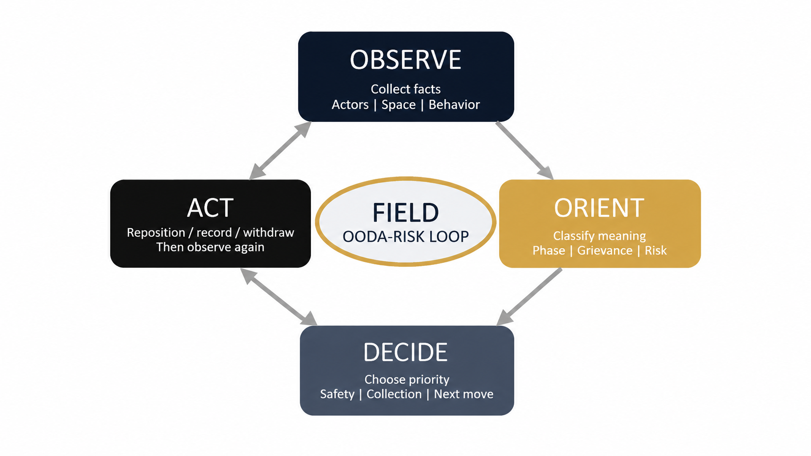
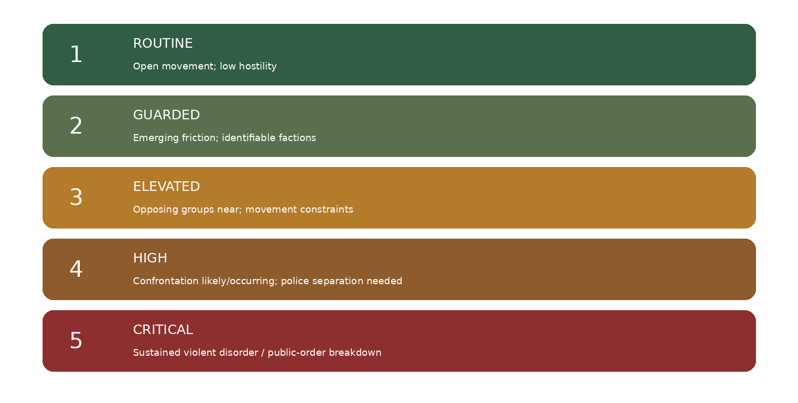

This framework is designed for field analysts covering political events, demonstrations, counter-demonstrations, diplomatic gatherings, and developing civil unrest. It combines the Observe-Orient-Decide-Act (OODA) decision cycle with a layered risk-assessment model and a behavior-based public-order classification system. The intent is to give analysts a disciplined way to distinguish political intensity from actual interaction risk while maintaining personal safety and evidentiary integrity.
The model is grounded in M. Nuri Shakoor’s contemporaneous field notes, photographs, and video observations from UN General Assembly 81 in New York City in September 2026.[1] It also incorporates a four-phase public-order framework spanning Passive Assembly, Expressive Friction, Dynamic Confrontation, and Violent Disorder/Riot.[2] The OODA cycle provides the cognitive structure for continuously updating the analyst’s field picture in a fast-changing environment.[3]
The principal lesson from UNGA 81 is that political events should be analyzed as evolving systems rather than photographed as static crowds. The analyst’s task is to observe behavior before inferring intent, orient on relationships and trajectory, decide according to evidence and safety, act conservatively, and immediately restart the loop.
Observe behavior before judging intent. Orient on relationships, space, and trajectory. Decide according to evidence and safety. Act conservatively, preserve access, and immediately restart the loop.
The framework supports analysts who must simultaneously collect political information, monitor changes in public-order conditions, protect themselves, and preserve a defensible evidence trail. It is not a policing doctrine and does not direct law-enforcement tactics. It is a field-analysis methodology.
The analyst maintains two separate mental models: mobilization intensity and interaction risk. Large crowds, loud chanting, coordinated apparel, or severe rhetoric may indicate strong mobilization but do not by themselves establish violence. Interaction risk increases when hostile or mutually antagonistic actors converge, separation distance decreases, egress is constrained, crowd compression increases, or security actors shift from facilitation toward physical separation.
Every field judgment should be traceable to one of three evidence layers: direct observation, contemporaneous analyst assessment, or externally reported information. Claims printed on signs and statements made by participants should be treated as attributed political claims until independently corroborated.
Boyd’s OODA loop is a continuous decision cycle of observing, orienting, deciding, and acting. Air University describes it as a process for functioning in complex, fast-changing environments, with observation and orientation feeding decisions that are then tested through action.[3]

2.1 Observe
Establish the field picture before interpreting it. Record actors, messages, space, behavior, security posture, movement, media activity, and available egress. Write what is seen before writing what it means.
2.2 Orient
Convert observations into meaning. Identify the event type, public-order phase, principal grievance, political target, legitimacy frame, organizational structure, counter-presence, and direction of risk. Orientation should actively test alternate explanations rather than merely confirming the analyst’s first impression.
2.3 Decide
Select the next collection and safety action. Decide whether to hold position, reposition, widen standoff distance, preserve an exit route, follow movement, change from still photography to video, document security changes, or terminate collection.
2.4 Act
Execute the selected action proportionately. The action produces new information, which begins the next OODA cycle. Field analysis is continuous, not episodic.
| Domain | What the Analyst Records |
|---|---|
| Actors | Protesters, counter-protesters, organizers, media, police, private security, political supporters, bystanders. |
| Message | Slogans, grievances, targets, demands, symbols, named individuals, organizational branding. |
| Space | Density, barriers, streets, entrances, choke points, police lines, safe routes, egress. |
| Behavior | Chanting, marching, filming, debating, arguing, pushing, fighting, dispersing, regrouping. |
| Security | Police numbers, posture, reinforcement, barricades, separation tactics, visible emergency assets. |
| Movement | Arrival, convergence, fragmentation, dispersal, relocation, re-formation. |
| Information Environment | Phones, livestreams, journalists, influencers, movement media, amplification behavior. |
The analyst should classify two things separately: the event form and the immediate crowd phase. Event form describes what the gathering is doing. Crowd phase describes its current interaction condition. The reference framework distinguishes lawful rallies and demonstrations from civil disobedience, civil unrest, and riot based on behavior, disruption, and violence, not political viewpoint.[2]
| Phase | Primary Indicators | Risk Meaning | UNGA 81 Illustration |
|---|---|---|---|
| Passive Assembly | Open spacing, ambient discussion, periodic chants. | Low interaction risk unless conditions change. | Portions of the Liberia debate environment. |
| Expressive Friction | Shared identity, loud chanting, directional clustering, visible out-group orientation. | Moderate; monitor convergence and egress. | Early/mid Guinea mobilization; some Liberia argumentation. |
| Dynamic Confrontation | Directed verbal hostility, crowd compression, hostile proximity, targeted police separation. | High; trajectory and safe positioning become priorities. | Peak Guinea protest / counter-protest convergence. |
| Violent Disorder / Riot | Sustained destructive violence, projectiles, barricades, attacks on people, property, or infrastructure. | Critical. | Not supported as the overall classification by the reviewed UNGA 81 evidence. |
The 1–5 field state is a situational temperature. It is designed for rapid reassessment and should be recorded as a trajectory, not as a static label.

The rapid field state should be paired with a conventional likelihood × impact assessment. This keeps immediate crowd temperature separate from consequences to the analyst, participants, bystanders, access routes, diplomatic and security operations, and public order.
Cross-group proximity, crowd compression, hostility, unpredictable movement or re-formation, and security-control gaps.
Analyst safety, participant or bystander harm, access disruption, diplomatic or security effects, and broader public-order consequences.
Likelihood × Impact. A high interaction state can coexist with a different formal risk score depending on consequence and exposure.
| Trigger | Analyst Response |
|---|---|
| Counter-protest arrives | Reassess proximity, escape routes, and whether the collection position is becoming a convergence point. |
| Police reinforcement | Document posture change; determine whether separation, containment, extraction, or dispersal is underway. |
| Physical contact | Increase standoff; switch collection priority from messaging to interaction dynamics and safety. |
| Route change | Identify whether movement is dispersal, relocation, or deliberate movement toward a new target. |
| Crowd fragmentation | Track subgroups separately; do not assume event termination. |
| Secondary-location movement | Reassess political significance of destination and likelihood of re-formation. |
| Egress narrows | Reposition before crowd geometry forces the decision. |
Never assume dispersal means termination. Distinguish dispersal, fragmentation, relocation, and re-formation. The Guinea case demonstrated that removal from one location did not end mobilization; related activity later re-formed around a politically significant secondary location.[1]
UNGA 81 provided a concentrated comparative environment in which multiple diaspora and advocacy networks used the same diplomatic geography for very different political objectives. The field collection included Guinea, Liberia, Haiti, Bangladesh, North Korea-focused advocacy, and a Philippines / Pax Silica coalition.[1]
7.1 Guinea: Polarized Confrontation and Re-formation
- Observe: sustained organized mobilization, recurring FNDC-associated imagery, red apparel, chants, political signs, extensive phone recording, counter-presence, restricted urban geometry, and visible NYPD presence.
- Orient: the event progressed from Demonstration/Protest through Expressive Friction into Dynamic Confrontation. The critical shift came from proximity, compression, and direct interaction between politically opposed actors, not merely from loud rhetoric.[1][2]
- Decide: field priorities shifted from grievance collection to police posture, spillover potential, safe distance, and tracking movement during dispersal.
- Act and re-observe: field notes recorded a physical confrontation during dispersal, NYPD intervention and escort/removal activity, and later re-formation around the Waldorf Astoria / Guinea delegation area.[1]
- Analytical lesson: polarization and movement trajectory were more informative than turnout. The overall evidence did not establish sustained riot-level behavior.
7.2 Liberia: Political Deliberation Rather Than Civil Disorder
- Observe: prolonged face-to-face political debate, animated gestures, competing interpretations, but no comparable police separation line, barricade pressure, or sustained physical confrontation.
- Orient: Passive Assembly to Expressive Friction. The central intelligence requirement was narrative competition, not confrontation prediction.[1]
- Analytical lesson: strong political disagreement can remain civic and discursive. Diaspora sentiment should not be treated as a single national position.
7.3 Haiti, Bangladesh, North Korea, and Pax Silica
Haiti: Sovereignty / foreign-intervention grievance. The observed messaging challenged U.S. and UN involvement, illustrating that the international institution hosting a protest can itself be part of the grievance target.[1]
Bangladesh: Narrative plurality. Minority-rights advocacy and leadership-centered political currents appeared in the same broader protest environment. The correct unit of analysis is actor/network, not nationality alone.[1]
North Korea-focused advocacy: Target-specific external accountability. Severe human-rights and institutional messaging was present, but observed interaction risk was comparatively low. Message severity did not equal crowd risk.[1]
Pax Silica / Philippines: Coalition mobilization. Land, water, AI infrastructure, war, foreign investment, and sovereignty were connected under a shared mobilizing narrative. The key variable was network architecture rather than direct confrontation.[1]
| Case | Core Grievance | Political Frame | Mobilization | Interaction Risk | Observed Phase |
|---|---|---|---|---|---|
| Guinea | Transition legitimacy; detainee/disappearance; governance | Regime legitimacy / human rights | High | High at peak | Expressive Friction → Dynamic Confrontation |
| Liberia | Governance performance; accountability | Performance legitimacy | Moderate | Low–Moderate | Passive → Expressive Friction |
| Haiti | Foreign intervention / sovereignty | National sovereignty | Moderate | Low observed | Passive / Expressive |
| Bangladesh | Minority rights + political loyalty | Rights + partisan legitimacy | Moderate | Low observed | Passive / Expressive |
| North Korea advocacy | Human rights / regime accountability | External accountability | Low–Moderate | Low | Passive Assembly |
| Pax Silica / Philippines | Land, water, AI, militarization, sovereignty | Resource sovereignty | Moderate–High | Low–Moderate | Expressive Friction |
Two or more competing political constituencies occupy the same space. Primary concern: interaction risk.
Participants contest interpretations within a shared national political space. Primary concern: narrative competition.
Participants seek visibility for a specific grievance or demand. Primary concern: message, target, and evidence.
Multiple grievances are integrated into a shared mobilizing narrative. Primary concern: network architecture and issue convergence.
| Event | Date/time/location; country/issue; actor/network. |
|---|---|
| Observe | Crowd size/density; slogans; movement; opposition; police posture; media/digital activity; egress. |
| Orient | Event type; crowd phase; grievance; target; demand; legitimacy frame; mobilization intensity; interaction risk. |
| Decide | Field state 1–5; 5×5 operational risk; collection priority; safety boundary; next trigger. |
| Act | Hold/reposition/withdraw; photo/video/audio; follow movement; document security changes; record dispersal; reassess. |
| Triggers | Counter-protest arrival; police reinforcement; physical contact; route change; leader/convoy arrival; dispersal order; crowd fragmentation; secondary-location movement. |
- Distinguish direct observation from inference and attributed claims. A sign, chant, or participant statement establishes what was communicated, not whether the claim is true.
- Record time and trajectory. The value of field notes increases when they show how risk changes rather than simply how an event looked at one moment.
- Preserve original files and note duplicates. Video is strongest for behavior and movement; still photography is strongest for message coding; handwritten notes preserve temporal judgments not recoverable after the fact.
- Reassess after dispersal. Track whether groups terminate, fragment, relocate, or re-form around a new target.
- Conduct an after-action comparison against the initial assessment. Identify what changed, which indicators mattered, which assumptions failed, and which field positions created or reduced risk.
The field analyst’s advantage comes from disciplined adaptation. Political protest environments are dynamic systems in which identity, grievance, space, counter-presence, police posture, digital amplification, and movement interact continuously. The UNGA 81 cases demonstrate that the most useful intelligence is often found in transitions: mobilization to convergence, disagreement to hostility, containment to dispersal, and dispersal to re-formation.
The OODA-Risk model provides a practical discipline for following those transitions without collapsing political intensity into violence or treating every crowd as a single actor. Used consistently, it produces safer collection, clearer evidentiary separation, more defensible risk assessments, and better comparative analysis across political events.
- [1]Shakoor, M. N. (2026). M. Nuri Shakoor field notes from UNGA 81 protests. Unpublished contemporaneous field notes and evidence package, New York City.
- [2]Operational Analysis of Public Assemblies, Crowd Psychology, Civil Unrest, and Strategic Public Order Frameworks. (2026). MNS Consulting-provided analytical reference.
- [3]Air University. (n.d.). Cultural KSAs: Skill Development Using the OODA Loop. U.S. Air Force. airuniversity.af.edu